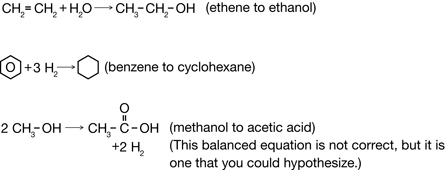
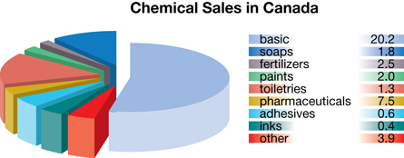
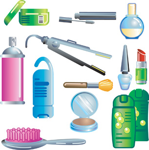

Module 6—Petrochemicals
 Explore
Explore
In Module 5 you learned about hydrocarbons. The properties of hydrocarbon molecules make the molecules useful for a variety of processes. What do you know about these processes? Complete TR 1 to find out.
Try This
TR 1. Complete “Starting Points” questions 1–3 on page 410 in the textbook. Save a copy of your answers in your course folder. Don’t worry if you don’t know the answers right now—just answer each question to the best of your ability. Later in this module you will have an opportunity to revise your answers before sharing them.
 Self-Check
Self-Check
As you get started in this module, it is important that you recall information from Module 5. You will build on that information in Module 6. Refresh your memory by completing SC 1.
SC 1. Complete “Practice” questions 1–3 on page 412 of the textbook.

Try This
TR 2. Read through “Exploration” on page 411 in the textbook. As you work through Module 6 you will learn more about the use of molecules from petroleum. Create a document in your course folder. In this document you will record evidence and arguments from a variety of perspectives that address the resolution stated in “Exploration.” Save your document in your course folder. Later you will summarize how this issue is viewed from various perspectives.
 Read
Read
Read pages 412–413 in the textbook.
Self-Check
Retrieve your copy of the Module 6: Lesson 1 Assignment that you saved to your computer earlier in this lesson. Print a copy of the structural formulae that appear at the end of the document. The structural formulas are of the molecules listed in “Figure 2” on page 413 of the textbook. You may wish to use these structural formulas to answer SC 2.
SC 2. Begin your investigation of chemical reactions involved in converting petroleum into petrochemicals by answering “Practice” questions 5 and 7 on page 414 in the textbook.
Self-Check Answers
Contact your teacher if your answers vary significantly from the answers provided here.
SC 2.
Practice 5.
Many answers may exist; a few examples are provided.

Practice 7.

Petrochemicals

© Christos Georghiou/shutterstock
petrochemical: a chemical made or extracted from petroleum
In Alberta, the two main sources for hydrocarbons are natural gas and crude oil. Currently 95% of the natural gas and crude oil harvested is burned as an energy source. The remaining 5% is used as feedstock to create petrochemicals.
Petrochemicals include any chemicals produced from petroleum. Examples of petrochemical products include plastics, synthetic clothing, shingles, cosmetics, paint, carpets, fertilizers, adhesives, and even pharmaceuticals. The petrochemical industry is considered a secondary or tertiary industry because it takes raw materials and creates products or intermediaries from them.
Primary petrochemicals are raw chemicals that are recovered from the earth. For example, you will recall from Module 5 that ethane is a component of natural gas. It is used as feedstock to create ethene through ethane cracking. Ethene has some uses, such as ripening fruit, but most ethene is further processed to create other petrochemicals.